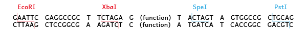
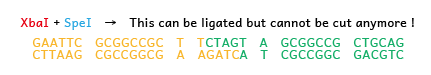

iGEM is a synthetic biology competition.
In synthetic biology, genetic engineering is often used to add or regulate functions to a biological system.
The modular nature of information coded on DNA allows a portion of DNA to be utilized as a functional unit.
In iGEM, functional units are made into what is called a BioBrick part, a standardized format that makes combining different Biobrick parts easy.
For example, there are parts that code for proteins such as GFP and regulatory sequence such as for sugar-responsiveness.Connecting parts and devices such as these, iGEM participants aim to realize their project.
For instance, an organism that fluoresces when it detects sugar can be created by combining the above.
Construction of DNA constructs using Biobricks requires knowledge on how the standard works.
In this BioBrick Puzzle, you can learn how to construct!
BioBricks are standardized to facilitate the assembling constructs by placing a set of restriction sites upstream and downstream of a part. This makes ligating parts together easy, and because of the way in which the restriction sites are ordered, the same restriction sites are recovered after two parts are ligated together. In addition, the same restriction enzymes can be used repeatedly to keep adding parts. Here is how it works.
A BioBrick part is required to have four restriction sites –EcoR1 (E), XbaI (X), SpeI (S), and PstI (P)-- at the required location. Upstream of the part, are the E and X sites, and downstream to it are the S and P sites.
Ligation can occur between the same pair of restriction sites : E and E, X and X, S and S, P and P.
X and S can also be ligated together, but this site cannot be digested by either after ligation.
As shown below, the DNA sequence shows that these sites are recovered after ligation.


Let's learn what will happen after ligating two parts.
At first, the aim is to combine two parts.
Hints :
・Click the part and select two restriction sites. The part can be cut out.
・When it is possible to ligate two parts, click them. The two parts are ligated.
When combining the two parts, E and E; X and S sites are ligated together.
Notice that the new part can be cut at E,X,S,P sites again,but not at the site M -- made by connecting X and S.
So, the new part still keeps the order, E, X, functional site, S, P.
You can use this part in the same way next time.
Well, now you know how to create new parts and may realize that assembling is easy!
This time, let's combine parts without any instructions!
You can create the complex systems in this way !